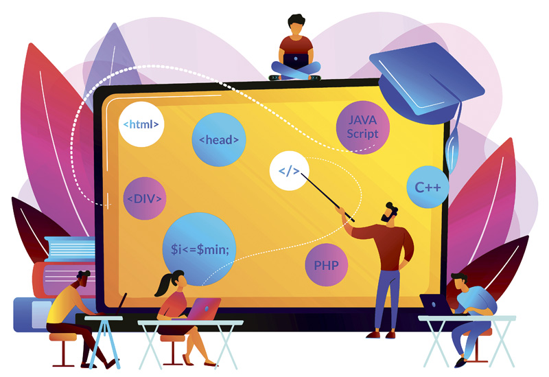

La mayoría de las aplicaciones de escritorio que pueden leer y escribir ficheros utilizan un formato de fichero especial. Por ejemplo, Microsoft Word entiende los ficheros .doc y Microsoft Excel entiende los .xls. Estos ficheros contienen las instrucciones para reconstruir el documento cuando se vuelve a abrir y para saber cuál es su contenido, además de los "metadatos" sobre el artículo, como por ejemplo el autor, la fecha de la última modificación del documento e incluso cosas como la lista de cambios realizados con el fin de poder recuperar todas sus diferentes versiones. Esto de acuerdo al autor Mark Norman Francis.
